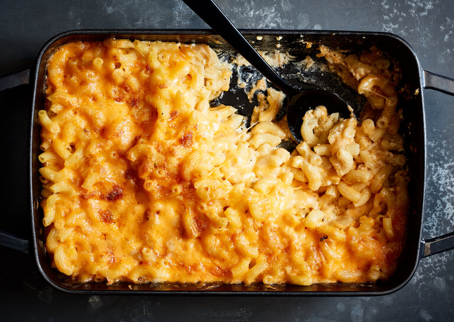

Homemade Mac and Cheese

Mom's Favorite Baked Mac and Cheese
This creamy baked mac and cheese recipe is one I first made three years ago when I was in California. When I got back to Texas, I made it for my mom. This is now her favorite macaroni and cheese. She begs me to make it when I come to visit.
Ingredients
- 2 tablespoons butter
- 1/4 cup finely chopped onion
- 2 tablespoons all-purpose flour
- 2 cups milk
- 3/4 teasponn salt
- 1/2 teaspoon dry mustard
- 1/4 teaspoon ground black pepper
- 1 (8 ounce) package elbow macaroni
- 2 cups shredded sharp Cheddar cheese
- 1 (8 ounce) package processed American cheese, cut into strips
Steps
- Preheat the ove to 350 F (175 degree C)
- Melt butter in a medium saucepan over medium heat. Sauté onion for 2 minutes. Stir in flour and cook for 1 minute, stirring constantly. Then stir in milk, salt, mustard, and pepper. Cook, stirring frequently, until mixture boils and thickens.
- Meanwhile, bring a pot of lightly salted water to a boil. Add macaroni and cook until al dente, 8 to 10 minutes; drain.
- Add Cheddar and American cheeses to milk mixture; stir until cheese melts. Combine cheese sauce and macaroni in a 2-quart baking dish; mix well.
- Bake in preheated oven until hot and bubbly, about 30 minutes. Let cool 10 minutes before serving.